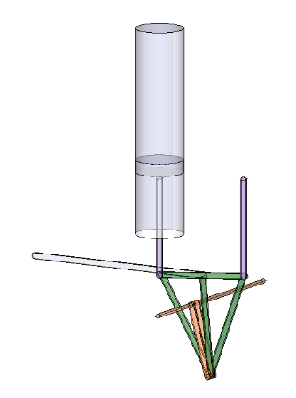

Alternative Energy Projects
Table of contents
Concrete Silo Retrofits
Wind Mill Generator
Stirling Engine Solar Powerplant
Hydrogen Generator
Wood gasification using high biomass willows
Solar water heater
Wood Stove
Tractor GenSet
We currently use about 18000 kWh per year (avg 50 kWh per day), with electric heat (25%) and hot water (50%), and 5 face cord of firewood for alternative heat. Better basement sealing could probably reduce this 10%. If we put solar panels on the barn roof, a 6 kW unit would pay for itself in 5 years.
Concrete Silo Retrofits
This structure isn't going anywhere, so use it
Wind Mill Generator
- Use old silo for base structure, but otherwise follow a historical build
- 24ft diameter wind vanes (4 arms, with auto-furling) should peak out at 7hp
- A modern upgrade: a 20ft diameter thrust bearing for it to change direction automatically
Mount generator on top: 5kw Unit, for about 4400 kWh per year
House inverter and electroncs inside and send high-voltage back to house?
There is 12 mph avg wind speed at our house - maybe a little higher on top of silo?
Option 1: connect to grid and net-meter (against zoning, without variance)
Option 2: power certain dedicated devices
- water pre-heater tank
- small battery bank and certain appliances
- compressed air
- water pump
Calcs
Stirling Engine Solar Powerplant
- retrofit the old silo for
- housing for a large Stirling engine
- engine configuration TBD (ross-yoke beta?) but these are good ideas
- custom built 20-30 cf steel fabrication
- old propane tanks?
- working fluid is air
- cheaply available
- charged by air compressor
- engine drives fly wheel which drives generator head
solar collector to heat air for engine
- create collector from metal roofing
- use small solar PV powered-pump to ensure engine is self-starting
- only moves water when sunny, to avoid nightime cooling
cooling tower to dissipate heat from engine
- needs to be insulated from solar collector side?
references
- Performance calculations
- Wikipedia entry
Figure 1: Linkages.

Hydrogen Generator
- Electrolysis of water
- Use deeply submerged tanks to collect the gas, to minimize compression
Wood gasification using high biomass willows
- For powering IC engines
- References
- UN doc
- World Bank
Solar water heater
- For preheating hot water supply
- Run hot water loop to faucets for instant hot water
- Collector design
- Insulated box with black metal roofing
- Copper pipe loop collects heat in insulated box, transmits heat to water in holding tank
- Brine as transfer liquid, so it won't freeze
Controller design
python-based microcontroller
logic: if temp in collector > temp in heat exchanger, then run pump
Heat Exchanger design
Modified propane tank, with insulation
Collector fluid runs through replacable copper coil inside tank
pressure/heat relief valve
Wood Stove
- Set furnace fan to run on timer to distribute heat and run air cleaner
Tractor GenSet
- 24 hp can power a 15kw Genset head
- Enough to power water heater and well pump at same time
Buy genset head and mount to tractor, driven by mower belt